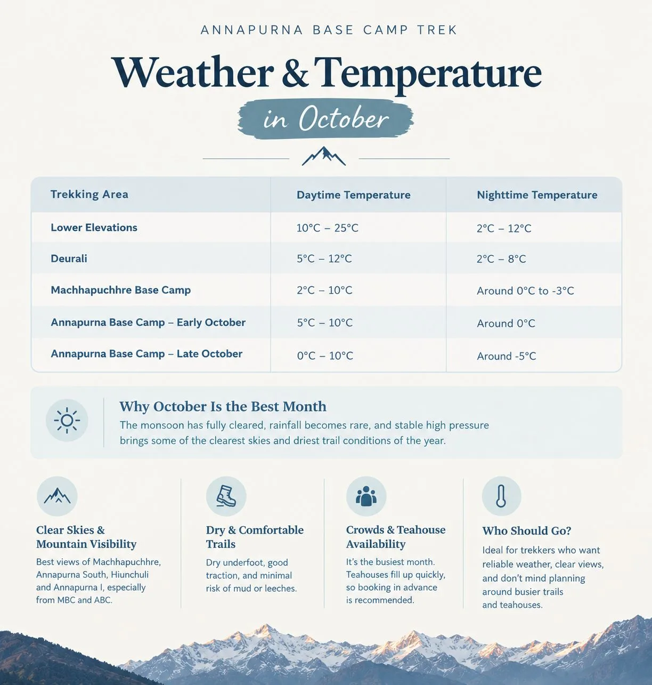
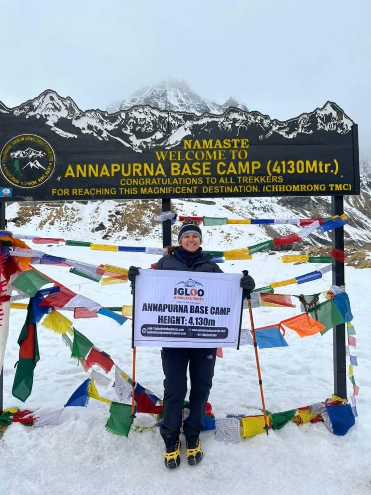
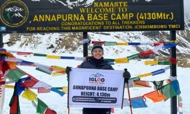
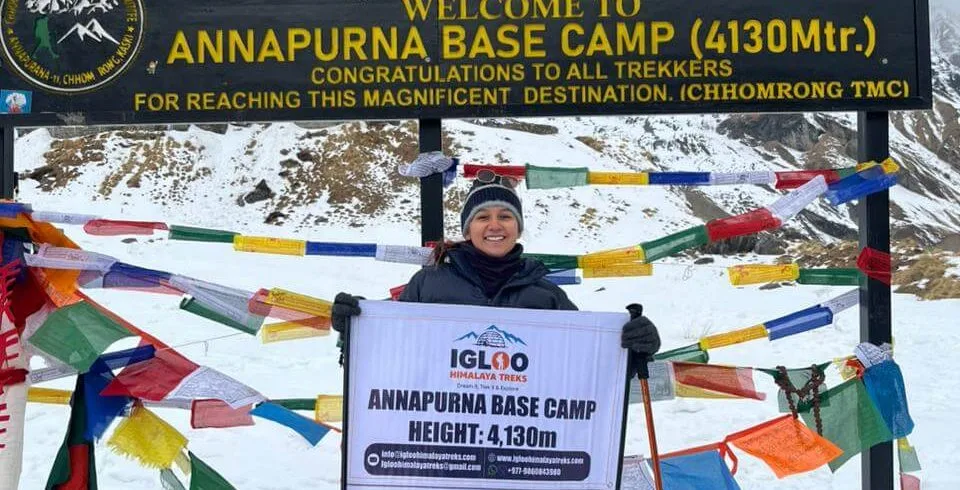

1. When to Trek Annapurna Base Camp: Timing Your Expedition for Clear Views, Safety & Solitude
The Annapurna Sanctuary is a high-altitude glacial basin completely surrounded by a ring of twelve towering peaks exceeding 6,000 to 8,000 meters. Because the only entrance into this natural fortress is the narrow, deep gorge of the Modi Khola river, seasonal weather systems directly dictate trail accessibility, river volumes, teahouse operations, and mountain safety.
Before committing to flight tickets, trekkers must balance four fundamental variables:
- Mountain Visibility: How many hours per day the peaks of Annapurna I, Annapurna South, Hiunchuli, and Machapuchare remain unblocked by clouds.
- Thermal Comfort: Managing the wide temperature swing between warm lower river valleys (Siwai, Jhinu) and sub-zero nights inside the glacial sanctuary.
- Trail Hazards & Avalanche Dynamics: Avoiding active spring avalanche chutes between Deurali and Machapuchare Base Camp.
- Trail Density & Lodging: Navigating peak-season teahouse crowds versus enjoying peaceful wilderness solitude.
| Season | Months | Peak Mountain Visibility | Trail Crowds | Avalanche / Weather Risk | Ideal For |
|---|---|---|---|---|---|
| Autumn (Peak) | Oct – Nov | 95% – 100% (Flawless) | High (Busy lodges) | Very Low (Dry snowpack) | Photographers & 1st-time trekkers |
| Spring (Prime) | Mar – May | 75% – 85% (Morning clear) | High (Flora season) | Moderate to High (Spring melt) | Nature lovers & warm-weather hikers |
| Winter (Cold) | Dec – Feb | 90% – 95% (Crisp azure) | Very Low (Solitude) | Moderate (Snowstorms) | Experienced cold-weather adventurers |
| Monsoon (Low) | Jun – Aug | 15% – 25% (Heavy mist) | Virtually Empty | High (Mudslides & leeches) | Botanists & extreme budget travelers |

2. The Autumn Window (Late September to November): The Gold Standard for Mountain Visibility
If your primary travel goal is standing beneath razor-sharp snow summits under deep sapphire blue skies, Autumn is the undisputed king of trekking seasons.
Beginning in late September, the moist monsoon low-pressure trough retreats southward over the Bay of Bengal. Stable continental high-pressure air moves over the Himalayas, producing exceptionally dry, calm, and crisp atmospheric conditions.

Month-by-Month Autumn Breakdown:
- Late September (The Monsoon Transition): Monsoon rains taper off rapidly. The hillsides are vibrant emerald green, waterfalls tumble at maximum volume, and trails are quiet. Occasional late-afternoon showers can still occur.
- October (The Perfect Month): The single best month of the year. Daily sunshine averages 8 to 9 hours, daytime temperatures at ABC are a comfortable 10°C to 14°C, and nighttime temperatures drop to a manageable -5°C. Lodges operate at 100% capacity.
- November (Crisp & Quiet): Flawless blue skies continue with even less cloud buildup than October. Temperatures become noticeably colder (-10°C to -12°C at night at ABC), but trails become considerably quieter by the third week of November.
3. The Spring Window (March to May): Blooming Rhododendron Canopies & Warming Days
Spring is the season of regeneration and wild color in the Himalayas. As winter snow melts away, the subtropical and temperate valleys below 3,000 meters burst into life.
Month-by-Month Spring Breakdown:
- March (Emerging from Winter): High trails above Deurali still have packed winter snow. The lower forests begin their floral display, and mountain air is crisp and clear. Nights remain chilly (-8°C at ABC), but teahouses are peaceful and uncrowded.
- April (Peak Floral Display): The entire Modi Khola gorge and surrounding ridges (Ghorepani, Tadapani, Chhomrong) explode in wild rhododendron blossoms ranging from blood-red to pale pastel pink. Temperatures are warm and pleasant for hiking in t-shirts during the day.
- May (Warm & Lush): The warmest month to trek. Daytime temperatures at ABC reach 15°C to 18°C. Glacial rivers roar with meltwater. Pre-monsoon haze can reduce afternoon visibility, making early 6:00 AM starts essential for clear views.

4. The Shoulder Secrets: Late May & Late December for Budget & Solitude Seekers
Savvy trekkers looking to avoid the crushing peak-season crowds and inflated teahouse prices often target the "shoulder windows":
- Late May (Pre-Monsoon Shoulder): Lower valleys are lush, days are long and warm, and tourist crowds have largely departed. While afternoon clouds gather by 1:00 PM, morning mountain views are reliable and teahouse hosts offer attentive, personal hospitality.
- Late November to Mid-December (Early Winter Shoulder): Characterized by crystal-clear, dry high-pressure skies, empty trails, and warm, sunny midday hiking. As long as you carry a warm -15°C sleeping bag and a heavy down parka for unheated lodge bedrooms, this window offers one of the best peaceful experiences in the Himalayas.
5. The Winter Reality (December to February): Frozen Beauty, Snowpack & Extreme Cold
Winter in the Annapurna Sanctuary is severe, beautiful, and unforgiving. By late December, winter temperatures take hold across the high amphitheater.

What to Expect in Winter:
- Arctic Nighttime Freezes: Night temperatures at Deurali, MBC, and ABC plunge to between -12°C and -20°C. Water in indoor buckets and plumbing pipes freezes solid every night.
- Microspikes & Gaiters Required: Shaded forest steps between Bamboo and Deurali turn into treacherous chutes of black ice. Traction microspikes are mandatory.
- Lodge Operations: While several lodges in Ghandruk and Chhomrong remain open year-round, only 1 or 2 lodges in Deurali and ABC remain operational in January and February.
6. The Summer Monsoon Off-Season (June to August): High Precipitation, Leeches & Landslides
The Pokhara valley and the southern slopes of the Annapurna range receive the highest monsoon rainfall in Nepal—often exceeding 4,000 millimeters per year. For this reason, summer trekking is generally discouraged for casual hikers.
Monsoon Realities:
- Terrestrial Leeches: Humid forests below Sinuwa are infested with active mountain leeches that drop from foliage and penetrate mesh hiking shoes.
- River Flooding & Mudslides: The dirt road between Pokhara and Siwai frequently washes out, causing transport delays. Wooden bridges across the Modi Khola are vulnerable to flash floods.
- Obscured Summits: Dense stratus cloud banks envelop the sanctuary day and night, meaning you might hike for eight days without catching a single glimpse of Annapurna I.
7. Seasonal Temperature Gradients: Dressing for +25°C Lowlands to -10°C High Camps
Because the Annapurna Base Camp trek spans over 3,000 vertical meters of relief, your clothing strategy must handle both sweltering subtropical humidity and arctic mountain freezes:
| Season | Lowland Daytime (1,400 m) | ABC Daytime (4,130 m) | ABC Nighttime Freeze | Essential Layering Rule |
|---|---|---|---|---|
| Autumn (Oct – Nov) | 22°C to 26°C | 10°C to 14°C | -5°C to -10°C | Breathable sun hoodie by day; 700-fill down jacket by night. |
| Spring (Mar – May) | 24°C to 28°C | 12°C to 16°C | -2°C to -8°C | Moisture-wicking tees; light fleece mid-layer; rain shell for mist. |
| Winter (Dec – Feb) | 14°C to 18°C | 2°C to 6°C | -14°C to -20°C | Heavy thermal base layers; 800-fill expedition parka; insulated mitts. |
| Monsoon (Jun – Aug) | 26°C to 30°C | 15°C to 18°C | 4°C to 8°C | Gore-Tex rain pants, heavy rain cape, quick-dry synthetics, leech socks. |
8. Avalanche Safety Calendar: High-Risk Months on the Deurali to MBC Trail
Understanding avalanche seasonality is critical when planning an Annapurna Sanctuary trek. The narrow corridor between Deurali (3,200 m) and Machapuchare Base Camp (3,700 m) passes directly beneath massive vertical avalanche funnels.
| Calendar Period | Avalanche Hazard Level | Primary Trigger | Safety Protocol |
|---|---|---|---|
| October – November | Very Low | Dry, bare rock; stable snow | Standard trail navigation; optimal safety. |
| December – January | Moderate | Winter blizzards; fresh powder slabs | Wait 24–48 hours after heavy snowfall before crossing. |
| February – April | High to Severe | Warming spring sunshine on wet snowpack | Cross strictly between 6:30 AM and 9:30 AM; follow guide route. |
| May – September | Low | Snow fully melted into river runoff | Watch for heavy rain mudslides rather than snow avalanches. |
In March and April, the sun hits the high southern walls of Hiunchuli around 10:30 AM. Solar warming destabilizes the winter snowpack, triggering heavy wet-slab avalanches that pour down the couloirs. Always cross this section early in the morning, maintain spacing between trekkers, and do not linger beneath avalanche chutes.
9. Lodge Dynamics & Room Availability: Peak Season Rush vs Quiet Off-Peak Months
Because environmental regulations strictly cap lodge capacity inside the upper sanctuary (only 5 lodges at ABC and 4 at Deurali), trail timing has a massive impact on your nightly comfort:
- October & April Peak Rush: Lodges operate at 100% capacity. Independent hikers without reservations frequently find all private twin rooms booked weeks in advance, having to sleep in communal dining halls on foam pads or shared 6-bed dormitories.
- November & March Shoulder: Excellent balance. Private rooms are easily secured with 24 hours of advance notice by your guide, dining halls are comfortably warm without long food queues, and trail hiking is peaceful.
- Winter (Jan – Feb): Lodges are quiet and serene. You will receive private rooms, personalized attention from lodge hosts, and sit right beside the heated dining stove every evening.
10. The Photographer's Seasonal Calendar: Sunrise Light, Wildflowers & Astrophotography
For photographers aiming to capture portfolio-grade imagery of the Annapurna range, timing your trip around light and atmospheric conditions is essential:

- October (Peak Astrophotography): Moonless nights during October offer dark, crystal skies. The core of the Milky Way arcs directly across Annapurna South, providing extraordinary long-exposure opportunities from the ABC moraine.
- November (Crisp Alpenglow): Sun angles in November create intense golden and fiery-pink morning alpenglow across the south face of Annapurna I, with zero atmospheric haze.
- April (Environmental Portraits & Flora): Vibrant rhododendron blooms provide stunning foreground framing against snow-capped giants. Morning mist drifting through the mossy cloud forests creates moody, ethereal mountain photography.
11. Travel Reliability: Pokhara Highway Conditions & Weather Disruptions Across Seasons
Unlike Everest treks where mountain flights into Lukla are routinely canceled by fog, the Annapurna Base Camp trek offers much higher transportation reliability:
- Kathmandu to Pokhara Flights: Flights operate with over 95% punctuality in autumn and spring. During winter mornings, occasional radiation fog in the Kathmandu valley delays departures by 1 to 2 hours.
- Overland Highway Transfers: The Prithvi Highway between Kathmandu and Pokhara is currently undergoing major four-lane widening. Road conditions are smooth during dry autumn and spring months, but heavy monsoon rains in July and August cause frequent mudslides and road blockages.
- Trailhead 4WD Jeeps: Dirt feeder tracks between Pokhara and Siwai are passable year-round in 4WD Mahindra Scorpio jeeps, except during extreme torrential monsoon cloudbursts.
12. Experiencing Living Culture: Coordinating Your Trek with Dashain, Tihar & Lhosar
Trekking through the traditional Gurung villages of Ghandruk and Chhomrong during cultural festivals elevates your mountain journey from a scenic hike to a deep cultural pilgrimage:
- Dashain Festival (September / October): Nepal’s greatest celebration of good over evil. Bamboo swings (Ping) are built in village squares, children fly paper kites, and village elders bestow red tika rice blessings.
- Tihar / Deepawali (October / November): The enchanting Festival of Lights. Teahouses glow with mustard-oil butter lamps and marigold garlands. Evenings feature festive singing and dancing (Deusi and Bhailo) by local youth groups.
- Tamu Lhosar (Late December / January): The Gurung New Year. Celebrated with traditional Gurung dances, colorful hand-woven clothing, and community feasts in Ghandruk and Chhomrong.
13. Seasonal Quiz & Decision Matrix: Which Window Perfectly Matches Your Goals?
Use this practical checklist to finalize your departure dates:
- You Should Trek in October if: You want guaranteed crystal-clear mountain views, don’t mind busy teahouses, and want the safest, most stable trail conditions.
- You Should Trek in November if: You want crisp autumn visibility with fewer crowds than October, and don’t mind colder nighttime temperatures.
- You Should Trek in April if: You love wildflowers, want warmer daytime hiking temperatures, and enjoy vibrant, social teahouses.
- You Should Trek in December / January if: You are an experienced cold-weather hiker seeking pristine snowscapes, peaceful lodges, and total mountain solitude.
- You Should Trek in Late March if: You want to see the early rhododendron bloom while avoiding the larger mid-April trekking groups.
14. Frequently Asked Questions: When is the Best Time for ABC?
Get immediate, expert answers to the most common timing questions for the Annapurna Base Camp trek.

Ready to Experience the Himalayas?
Whether you are preparing for high-altitude trekking, cultural circuits, or alpine summit expeditions, start planning a bespoke journey tailored to your fitness, travel season, and style.